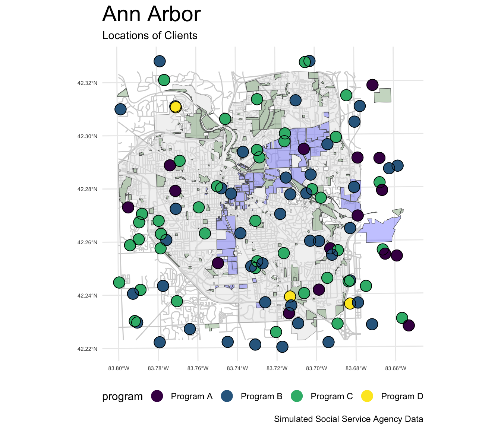

Code
library(ggplot2) # beautiful graphs
library(dplyr) # data wrangling
library(sf) # simple (spatial) features
library(readr) # import csvggplotlibrary(ggplot2) # beautiful graphs
library(dplyr) # data wrangling
library(sf) # simple (spatial) features
library(readr) # import csvread_sf To Open ShapefilesGetting the directory and filename right is important.
city_boundary <- read_sf("./shapefiles/AA_City_Boundary/AA_City_Boundary.shp")
buildings <- read_sf("./shapefiles/AA_Building_Footprints/AA_Building_Footprints.shp")
trees <- read_sf("./shapefiles/a2trees/AA_Trees.shp")
parks <- read_sf("./shapefiles/AA_Parks/AA_Parks.shp")
university <- read_sf("./shapefiles/AA_University/AA_University.shp")
WashtenawRoads <- read_sf("./shapefiles/Roads/RoadCenterlines.shp")
AnnArborRoads <- st_crop(WashtenawRoads,
city_boundary) # crop to only get A2 roadsWarning: attribute variables are assumed to be spatially constant throughout
all geometries# watersheds <- read_sf("../shapefiles/watersheds/Watersheds.shp")read_csv to Read Text File with Client Dataclients <- read_csv("./location-data/clients.csv")Rows: 453 Columns: 10
── Column specification ────────────────────────────────────────────────────────
Delimiter: ","
chr (3): gender, race_ethnicity, program
dbl (7): ID, age, family_income, mental_health_T1, mental_health_T2, latitud...
ℹ Use `spec()` to retrieve the full column specification for this data.
ℹ Specify the column types or set `show_col_types = FALSE` to quiet this message.clients <- clients %>%
filter(latitude <= 42.33 &
latitude >= 42.22 &
longitude >= -83.8 &
longitude <= -83.65)sf Object While Indicating Coordinate Reference System (CRS)# 4326 -> WGS1984
# point <- st_as_sf(clients,
# coords = c("longitude", "latitude"),
# crs = 4326)
# 4269 -> NAD1983 (A2 is NAD1983)
point <- st_as_sf(clients,
coords = c("longitude", "latitude"),
crs = 4269)
# write to shapefile
st_write(point,
"./shapefiles/clients/clients.shp",
append = FALSE) # replace; don't appendWarning in abbreviate_shapefile_names(obj): Field names abbreviated for ESRI
Shapefile driverDeleting layer `clients' using driver `ESRI Shapefile'
Writing layer `clients' to data source
`./shapefiles/clients/clients.shp' using driver `ESRI Shapefile'
Writing 103 features with 8 fields and geometry type Point.ggplot to Make The Map# NB RE Macs: the plotting device on Macs can be very slow
# we notice this with all the detail that is involved in maps
# maps can be REALLY slow on Macs
# so--inconveniently--we write directly to PDF on a Mac
# and don't see the graph in our RStudio window
# we have to manually open the PDF to see the created map
# Apparently, the first layer is important for setting the CRS of the map
# pdf("./mapping/ggplot-map-test.pdf") # open PDF device (uncomment on Mac)
# dev.off() # turn off PDF device (uncomment on Mac)ggplot(city_boundary) +
# geom_sf(data = buildings,
# fill = "lightgrey") +
geom_sf(data = AnnArborRoads,
color = "lightgrey") +
geom_sf(color = "darkgrey", alpha = .5) +
geom_sf(data = university,
fill = "blue",
alpha = .25) +
geom_sf(data = parks,
fill = "darkgreen",
alpha = .25) +
geom_sf(data = point,
aes(color = program),
size = 5,
alpha = 1.0) +
geom_sf(data = point,
size = 5,
pch = 21) + # 21 is outlines
# geom_sf(data = trees,
# size = .1,
# color = "darkgreen") +
labs(title = "Ann Arbor",
subtitle = "Locations of Clients",
caption = "Simulated Social Service Agency Data") +
scale_color_viridis_d() +
scale_fill_viridis_d() +
theme_minimal() +
theme(plot.title = element_text(size = rel(2)),
axis.text = element_text(size = rel(.5)),
legend.position = "bottom") 